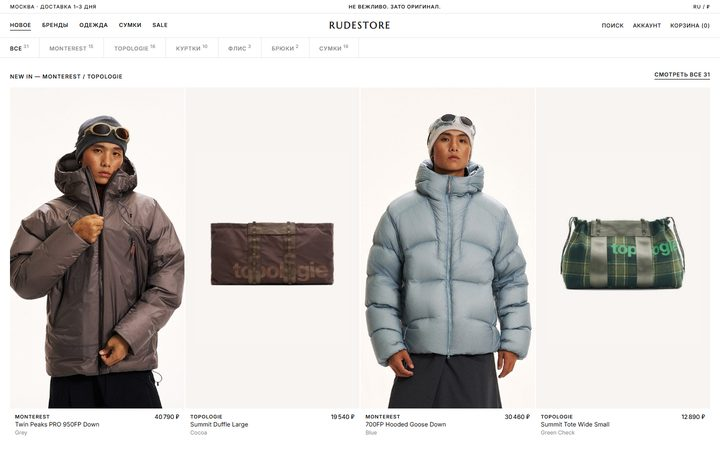
01Slam Jam ClassicЦентр-лого, табы брендов, ровная сетка из 4. Ближе всего к slamjam.com.
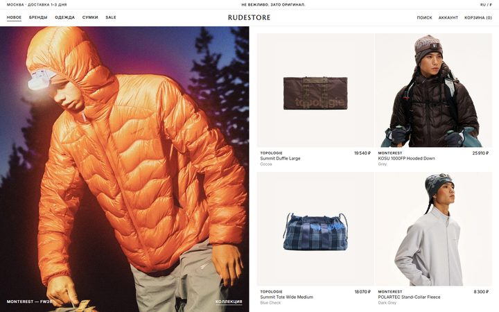
02Split CoverСлева кампейн Monterest, справа сетка 2×2. Два бренда в одном кадре.
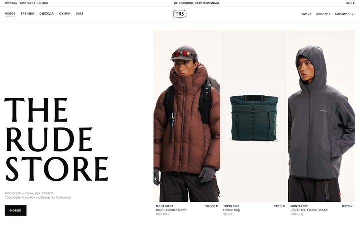
03Big StackСтек THE/RUDE/STORE Кирилла как герой, справа три карточки.
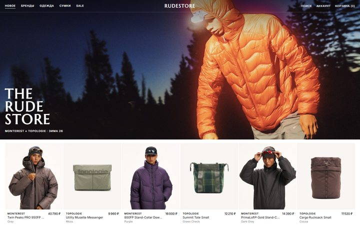
04Full Bleed + StripКампейн на весь экран, лого белым, снизу полоса из 6 товаров.
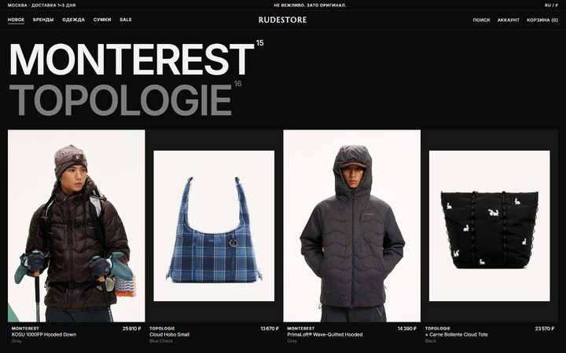
05Black IndexЧёрный фон, названия брендов крупно как навигация, 4 карточки.
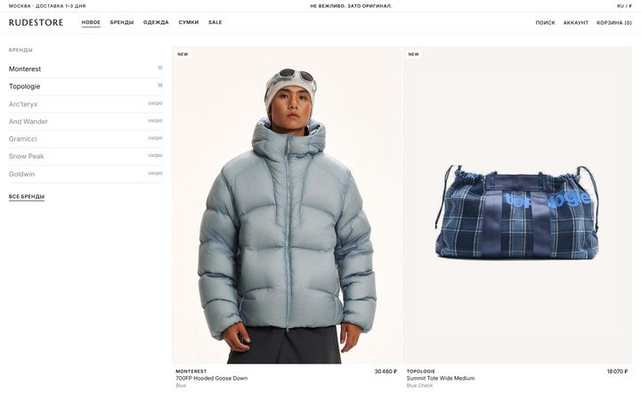
06Brand ListИндекс брендов текстом слева (как на slamjam), справа 2 крупные карточки.
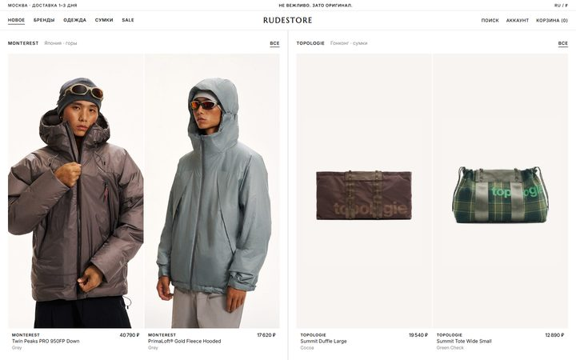
07Two BrandsЭкран поделён на два бренда: заголовок + 3 карточки в каждой половине.
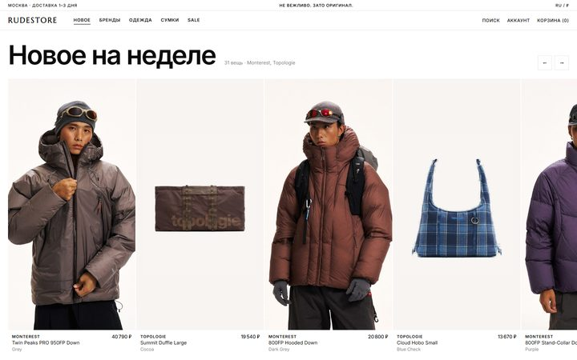
08RailЗаголовок крупным гротеском, под ним горизонтальная лента из 8 карточек.
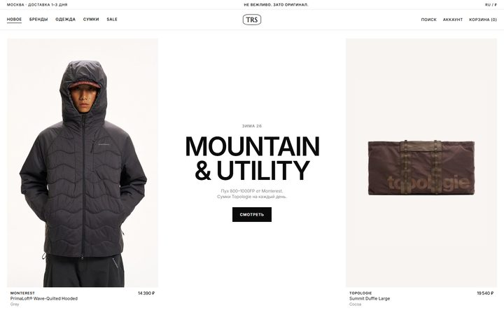
09Editorial CenterЦентральный заголовок-сезон, по бокам по 2 товара. Журнальная подача.
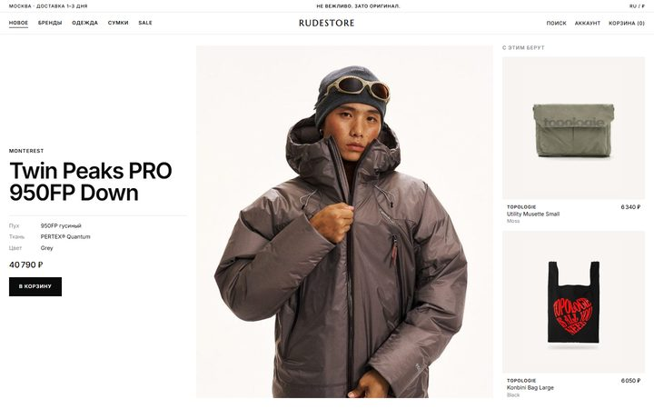
10Hero ProductОдин флагман по центру (Twin Peaks 950FP), сбоку характеристики и миниатюры.
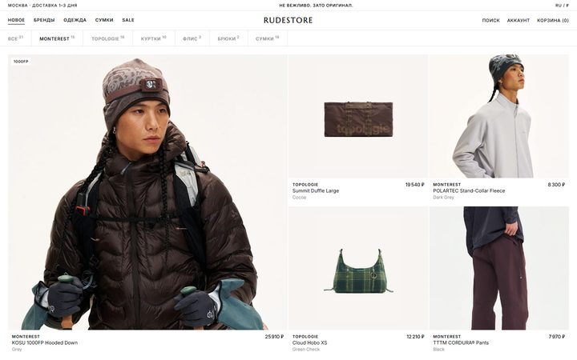
11MosaicОдна большая карточка + 4 малых. Асимметрия, но единый ритм подписей.
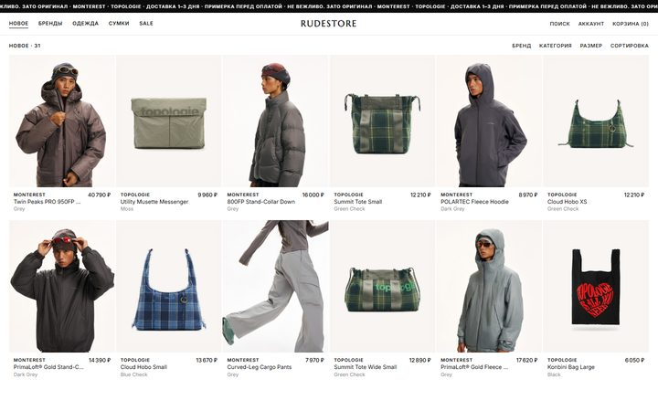
12Dense 6Бегущая строка с тоном Rude, плотная сетка 6 колонок, как каталог slamjam.
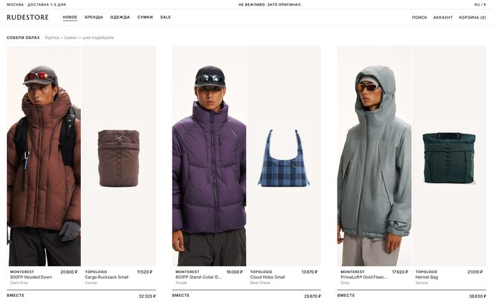
13PairsПары: модель Monterest + сумка Topologie. Показывает, как бренды сочетаются.
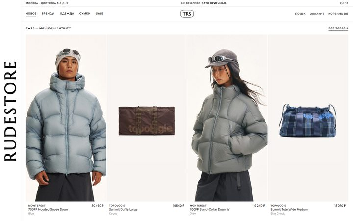
14Vertical MarkЛого RUDESTORE вертикально по левому краю, справа сетка 4×1 и подпись сезона.
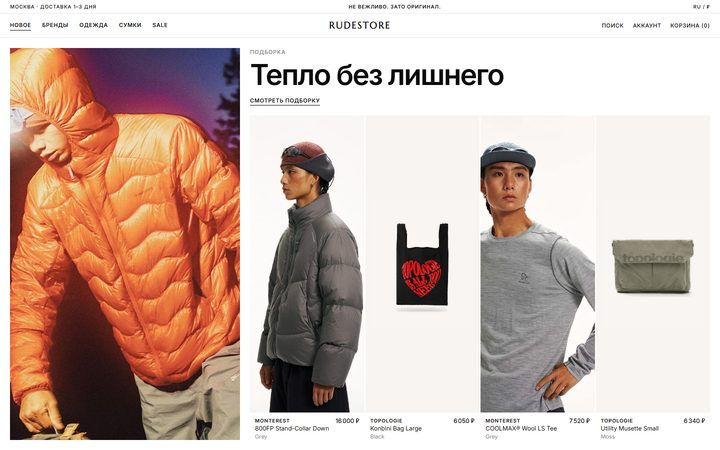
15Tall CoverУзкая вертикальная обложка Monterest слева, заголовок и 2×2 сетка справа.
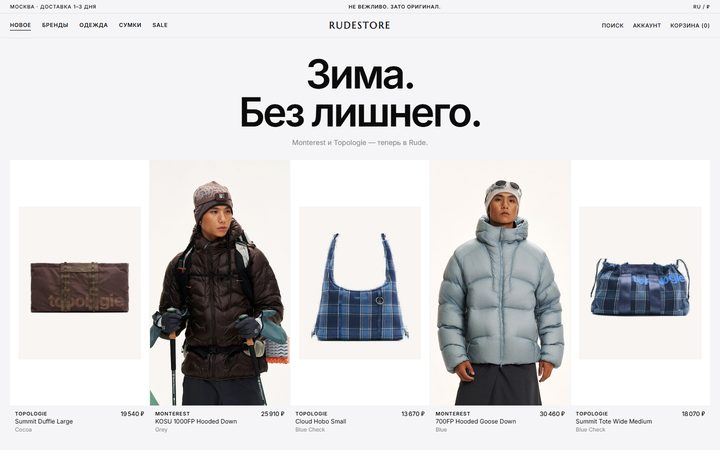
16Soft GreyФон #f5f5f7, плитки сливаются с фоном, крупный плотный заголовок по центру.
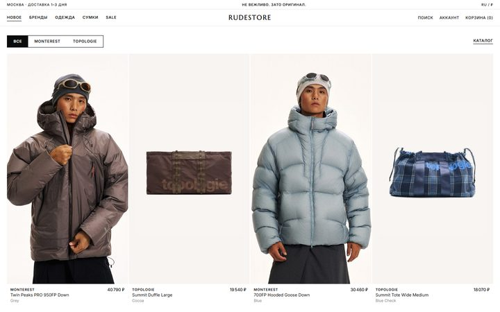
17SwitcherПереключатель коллекций (рабочий): Все / Monterest / Topologie, карточки меняются.
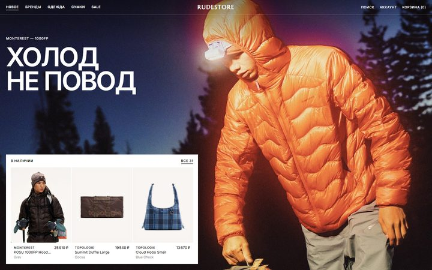
18Panel OverlayКампейн на фоне, белая панель с 3 карточками стоит поверх справа снизу.
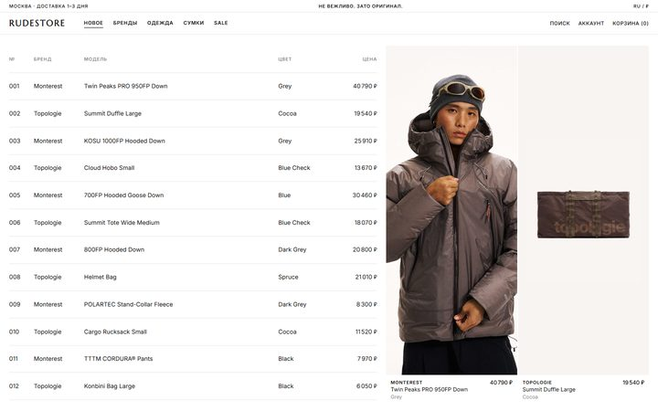
19Line ListСписок товаров строками (код, бренд, цена), превью фото по наведению + 2 карточки.
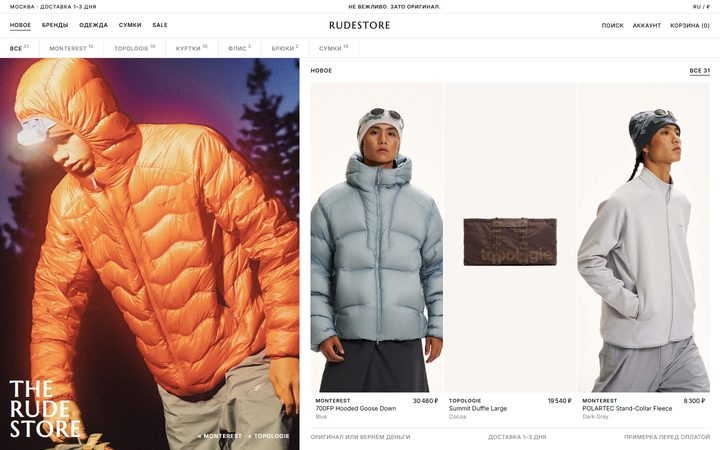
20FinalМой фаворит: бар, центр-лого, табы брендов, кампейн 50% + 3 карточки. Всё в 1 экран.